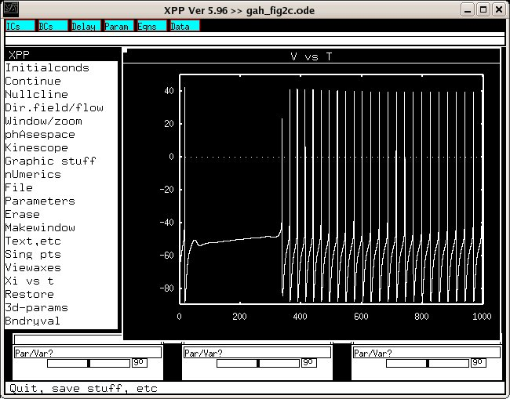

This is the readme for the model associated with the paper: Golomb D, Donner K, Shacham L, Shlosberg D, Amitai Y, Hansel D (2007) Mechanisms of Firing Patterns in Fast-Spiking Cortical Interneurons. PLoS Comput Biol 3:e156 This XPP file was supplied by Dr David Golomb golomb@bgu.ac.il Usage Instructions: Load the model with a command like xppaut gah_fig2c.ode Start the simulation by clicking on Initialconds -> (G)o You will see a reproduction of fig2c: 